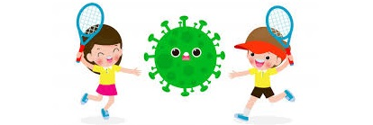

Xô, coronavírus: dicas e atividades para a quarentena
Primeiro, prevenção; segundo, #partiubrincar. Separamos uma série de dicas e atividades para reorganizar a agenda em casa durante a quarentena, confira

A Pandemia de coronavírus pede responsabilidade coletiva. Mesmo que a criançada esteja fora do grupo de risco, já sabemos que elas são veículos de transmissão e podem ser contaminadas, podendo afetar as populações mais frágeis, incluindo os próprios avós.
Por isso, esse período de quarentena nos confronta com o fechamento das escolas tem sido uma das medidas para evitar aglomerações e barrar a cadeia de contágios. Confira uma série de dicas e atividades para quarentena, para reorganizar
a agenda durante esse período.
- 1.Brincar sozinho pode fazer bem à saúde
- 2.Comer bem para fortalecer a imunidade
- 3.Higienizar brinquedos e evitar a disseminação do coronavírus
- 4.Ler em voz alta para as crianças
- 5.Brincar de alfabeto
- 6.Assistir canais do YouTube livres de publicidade
- 7.Liberar a sessão de cinema
- Transformar objetos de casa em experiências divertidas
- 8.Organizar uma caça ao tesouro
- 9.Construir brinquedos de garrafa pet
- 10.Aproveitar com criatividade as caixas de papelão